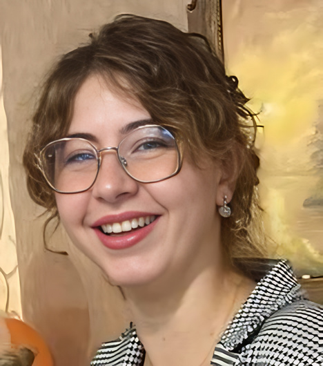

Actuellement en deuxième année de cycle ingénieur à l'ENSEEIHT en alternance (FISA) et apprentie ingénieure logiciel chez Kyber, je souhaite effectuer un semestre d'études (6 mois) à l'étranger. Passionnée par l'électronique et l'embarqué, je souhaite approfondir mes compétences techniques dans un environnement international.